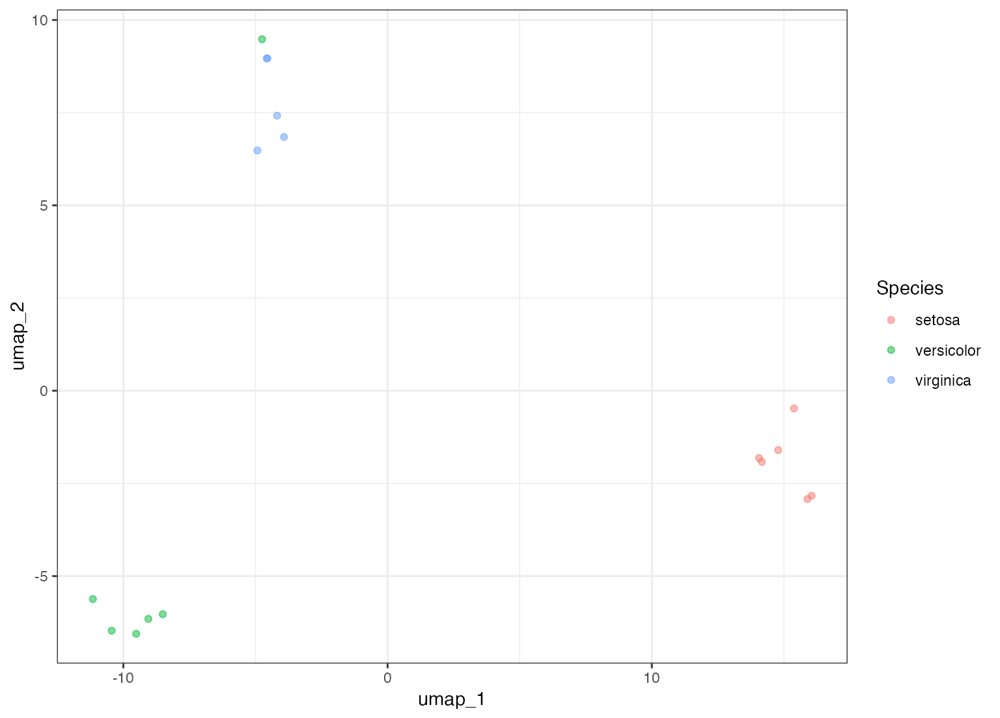

Supervised and unsupervised uniform manifold approximation and projection (UMAP)
Source:R/umap.R
step_umap.Rdstep_umap creates a specification of a recipe step that
will project a set of features into a smaller space.
Usage
step_umap(
recipe,
...,
role = "predictor",
trained = FALSE,
outcome = NULL,
neighbors = 15,
num_comp = 2,
min_dist = 0.01,
learn_rate = 1,
epochs = NULL,
options = list(verbose = FALSE, n_threads = 1),
seed = sample(10^5, 2),
prefix = "UMAP",
keep_original_cols = FALSE,
retain = deprecated(),
object = NULL,
skip = FALSE,
id = rand_id("umap")
)Arguments
- recipe
A recipe object. The step will be added to the sequence of operations for this recipe.
- ...
One or more selector functions to choose variables for this step. See
selections()for more details.- role
For model terms created by this step, what analysis role should they be assigned? By default, the new columns created by this step from the original variables will be used as predictors in a model.
- trained
A logical to indicate if the quantities for preprocessing have been estimated.
- outcome
A call to
varsto specify which variable is used as the outcome in the encoding process (if any).- neighbors
An integer for the number of nearest neighbors used to construct the target simplicial set. If
neighborsis greater than the number of data points, the smaller value is used.- num_comp
An integer for the number of UMAP components. If
num_compis greater than the number of selected columns minus one, the smaller value is used.- min_dist
The effective minimum distance between embedded points.
- learn_rate
Positive number of the learning rate for the optimization process.
- epochs
Number of iterations for the neighbor optimization. See
uwot::umap()for more details.- options
A list of options to pass to
uwot::umap(). The argumentsX,n_neighbors,n_components,min_dist,n_epochs,ret_model, andlearning_rateshould not be passed here. By default,verboseandn_threadsare set.- seed
Two integers to control the random numbers used by the numerical methods. The default pulls from the main session's stream of numbers and will give reproducible results if the seed is set prior to calling
prep()orbake().- prefix
A character string for the prefix of the resulting new variables. See notes below.
- keep_original_cols
A logical to keep the original variables in the output. Defaults to
FALSE.- retain
Use
keep_original_colsinstead to specify whether the original predictors should be retained along with the new embedding variables.- object
An object that defines the encoding. This is
NULLuntil the step is trained byrecipes::prep().- skip
A logical. Should the step be skipped when the recipe is baked by
bake()? While all operations are baked whenprep()is run, some operations may not be able to be conducted on new data (e.g. processing the outcome variable(s)). Care should be taken when usingskip = TRUEas it may affect the computations for subsequent operations.- id
A character string that is unique to this step to identify it.
Value
An updated version of recipe with the new step added to the
sequence of any existing operations.
Details
UMAP, short for Uniform Manifold Approximation and Projection, is a nonlinear dimension reduction technique that finds local, low-dimensional representations of the data. It can be run unsupervised or supervised with different types of outcome data (e.g. numeric, factor, etc).
The new components will have names that begin with prefix and a sequence
of numbers. The variable names are padded with zeros. For example, if
num_comp < 10, their names will be UMAP1 - UMAP9. If num_comp = 101,
the names would be UMAP001 - UMAP101.
Tidying
When you tidy() this step, a tibble with columns
terms (the selectors or variables selected) is returned.
Saving prepped recipe object
This recipe step may require native serialization when saving for use in another R session. To learn more about serialization for prepped recipes, see the bundle package.
References
McInnes, L., & Healy, J. (2018). UMAP: Uniform Manifold Approximation and Projection for Dimension Reduction. https://arxiv.org/abs/1802.03426.
"How UMAP Works" https://umap-learn.readthedocs.io/en/latest/how_umap_works.html
Examples
library(recipes)
library(ggplot2)
split <- seq.int(1, 150, by = 9)
tr <- iris[-split, ]
te <- iris[split, ]
set.seed(11)
supervised <-
recipe(Species ~ ., data = tr) %>%
step_center(all_predictors()) %>%
step_scale(all_predictors()) %>%
step_umap(all_predictors(), outcome = vars(Species), num_comp = 2) %>%
prep(training = tr)
theme_set(theme_bw())
bake(supervised, new_data = te, Species, starts_with("umap")) %>%
ggplot(aes(x = UMAP1, y = UMAP2, col = Species)) +
geom_point(alpha = .5)
